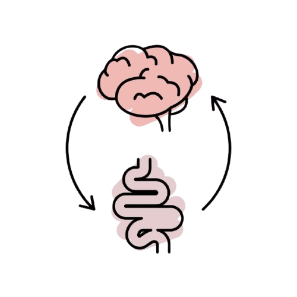

El Principio de Integridad
La verdadera salud no consiste únicamente en la ausencia de enfermedades, sino en un estado completo de equilibrio físico, mental y social. Cuando cuidamos de nuestro cuerpo mediante la nutrición y el ejercicio, facilitamos un entorno biológico favorable para la estabilidad emocional.
Información Clave
El intestino y el cerebro se comunican constantemente a través del eje intestino-cerebro. Cerca del 90% de la serotonina (neurotransmisor responsable del bienestar) se produce en el tracto digestivo, demostrando que la alimentación afecta directamente el estado de ánimo.

Nuestras Áreas de Enfoque

Área Física
Optimiza tus niveles de energía a través del movimiento, descanso reparador, alineación postural y nutrición consciente.
Explorar Físico
Área Emocional
Desarrolla herramientas psicológicas para gestionar el estrés, cultivar el mindfulness y mantener un equilibrio interno.
Explorar Emocional